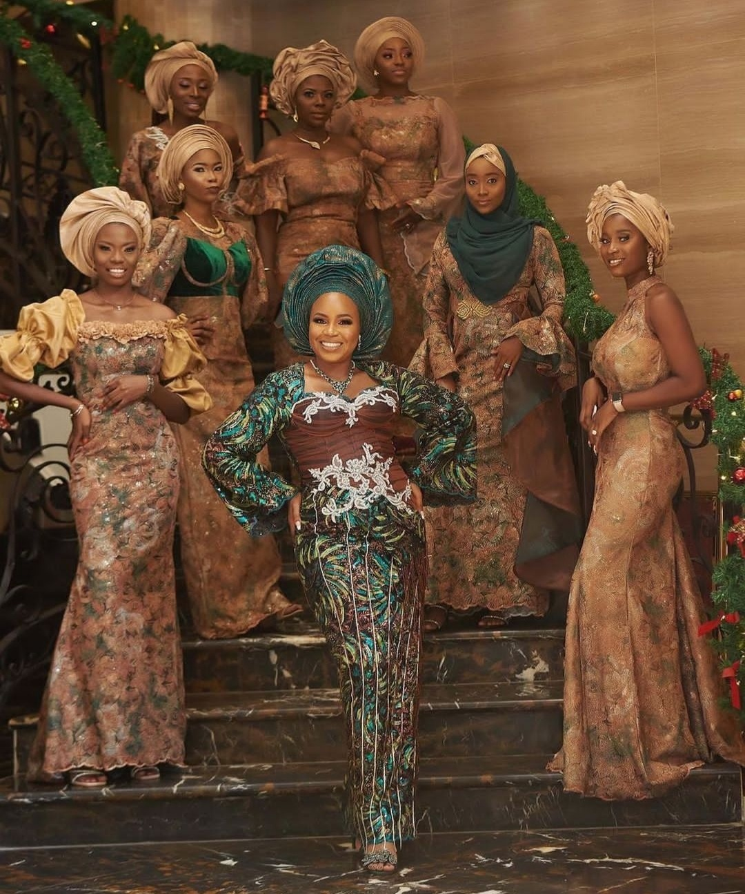
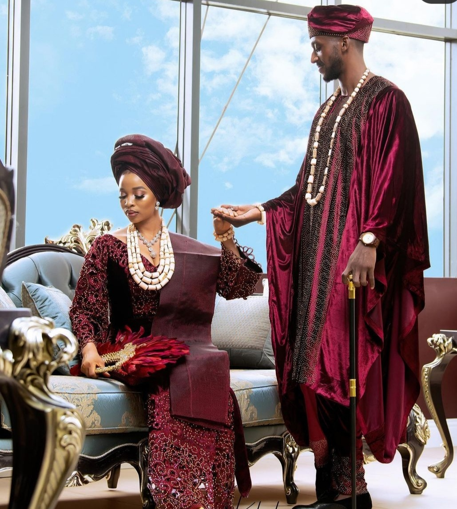
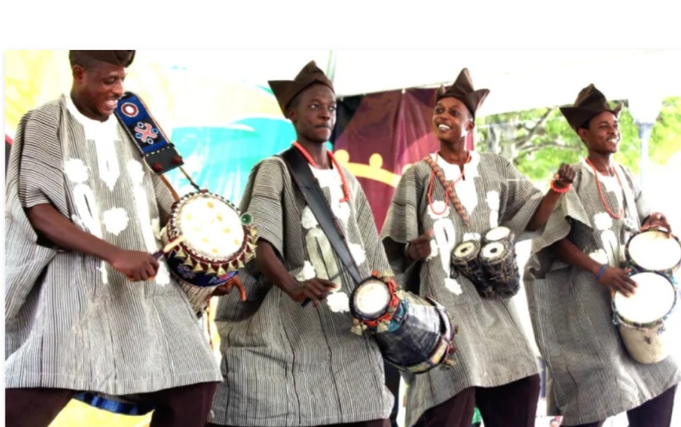
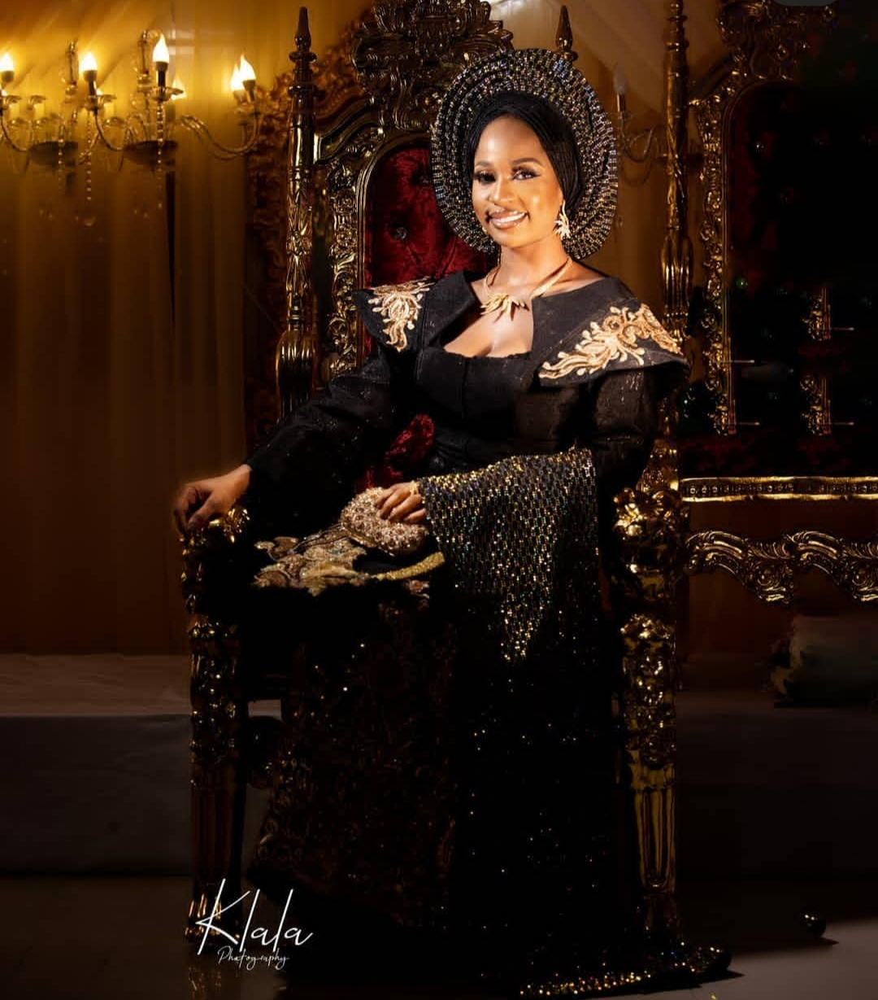
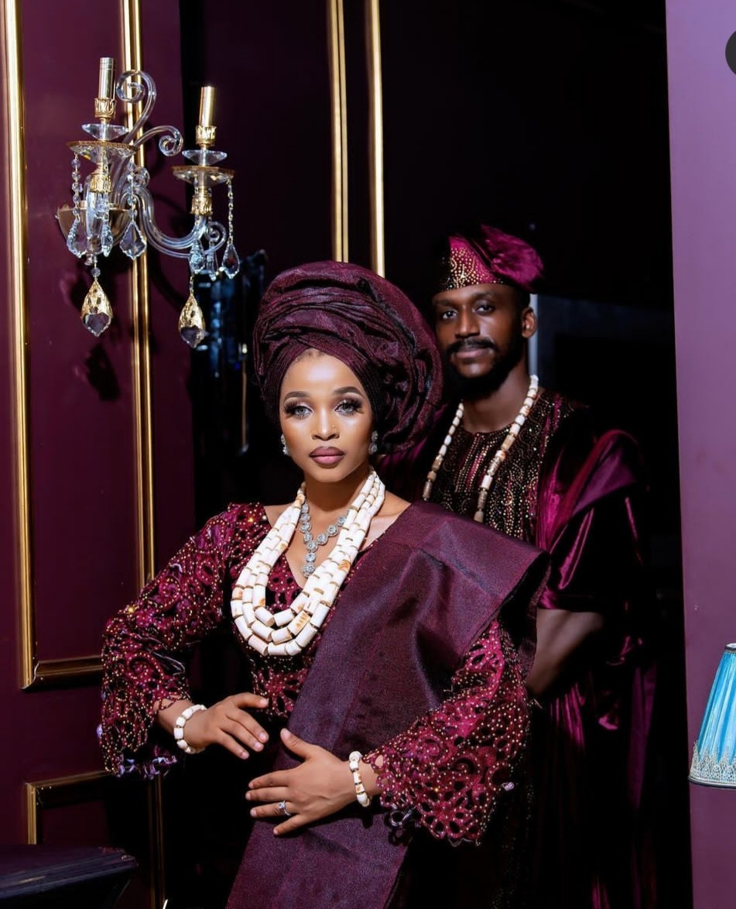
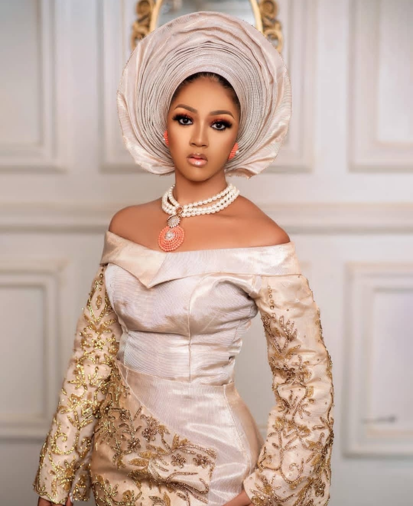

Yorùbá is a Niger-Congo language related to Igala, Edo, Ishan, and Igbo amongst others. It is one of the principal languages of Nigeria and spoken in a couple of countries in the West African coast. An estimated 20+ million people speak Yorùbá as their first language in south western Nigeria and more in the Republics of Benin and Togo. Yorùbá is also spoken by diaspora communities of traders in Cote d'Ivore, Ghana, Senegal and the Gambia, and it used to be a vibrant language in Freetown, Sierra Leone. Outside West Africa, millions of people have Yorùbá language and culture as part of their heritage; Yorùbá religion being one of the means of survival in Cuba during the obnoxious slave trade. Many who did not have Yorùbá as their heritage bought into Yorùbá identity through religious conversion. Yorùbá language, culture and religion survived since then until now in Brazil and several other New World countries. A mixture of the old and new decendants of the Yorùbá now live in North America, the United Kingdom and the rest of Europe. Yorùbá is one of the most extensively researched of all sub-Saharan languages and cultures, and has a long tradition of oral verbal production (oral literature) within indigenous cosmopolitan which is receptive of both Islamic and Christian cultures. Yorùbá is one of the many African languages that one is sure to hear people speak in the buses and the underground trains in several parts of London; a BBC reporter has compared Rye Lane in Peckham, South East London, to a mini-Lagos, where one can hear several people speaking loudly in Yorùbá as they go about their shopping. Like many other African languages, Yorùbá is tonal.
While Yoruba can be found throughout the entirety of West Africa, even reaching into Benin, Ghana, and Togo, the greatest concentration of Yoruba is found
in Yorubaland, an area in western Nigeria. Considered the nexus of the Yoruba cultural identity, Yorubaland is bordered by the Borgu (variously
Bariba and Borgawa) in the northwest, the Nupe and Ebira in the north, the Ẹsan and Edo to the southeast, and the Igala and other related groups to the
northeast.
The Yoruba are known for their excellent craftsmanship, considered to be the most skilled and productive in all of Africa. Traditionally, they worked at
such trades as blacksmithing, leatherworking, weaving, glassmaking, and ivory and wood carving. The many densely populated urban areas of Yorubaland allow
for a centralization of wealth and the development of a complex market economy which encourages extensive patronage of the arts.
Many people of African descent in the Americas claim a degree of Yoruba ancestry, due to the slave trade of the eighteenth and nineteenth centuries.






The yoruba culture
There is several asoects of the beautiful yoruba culture some of which are listed below
Performance
Egungun masquerade dance garment in the permanent collection of The Children’s Museum of Indianapolis
The Yoruba performance repertoire includes various masquerade plays, folk operas, and a vibrant cinematic scene. Perhaps the most famous among Yoruba masquerade pieces, Gẹlẹdẹ from the Ketu region of the modern Republic of Benin, received the honor of being recognized as a Masterpiece of the Oral and Intangible Heritage of Humanity by UNESCO. Other Yoruba cultural productions that have gained international recognition include the Ifa corpus, a collection of hundreds of poems used in divination ceremonies and the Osun-Osogbo Sacred Grove, one of the few remaining functional sites for traditional religious ceremonies in Nigeria and a magnet for visitors from all over the world.
Recently, scholarly attention has focused on the performances of Egungun (representative of ancestral spirits visiting the living), Epa (symbolic performances variously promoting valor and fertility), and Ẹyọ, a procession of masked dancers.
Greeting Customs
The Yoruba maintain a widely observed system of traditional manners. When greeting an elder, a man is to bow and a woman is to curtsey. Sometimes,
when greeting someone of high reputation, like a member of the royal house, a woman or girl is to kneel and then get up quickly. A man is to lay down on
the ground before the important person, and then get up.
Sports
Traditional popular sports include: wrestling, called gidigbo or ijakadi, foot races, swimming and canoe races in river areas, horse riding in the savannah region, and various forms of combative performances. Combative performances are particularly popular during festivals and religious ceremonies. As is common throughout the West African region, soccer is the most popular contemporary sport, followed by track and field, boxing, and table tennis.
Yoruba athletic events take place in either the National Stadium, Lagos (55,000 capacity), Liberty Stadium, Ibadan (the first stadium in Africa) (40,000 capacity), Teslim Balogun stadium (35,000 capacity), Mọṣhood Kaṣhimawo Abiọla Stadium Abẹokuta (28,000 capacity), or Lekan Salami Stadium, Ibadan (25,000 capacity).
Many Yoruba also play Ayò, a popular board game called mancala elsewhere in Africa.
The Yoruba Diaspora
During the decline of the Oyo Empire, Yorubaland degenerated into a series of civil wars, in which military captives were sold into the slave trade. Most of the slaves that were exported as a result of the civil war) were sent to Haiti, Cuba, Puerto Rico, Brazil, and Trinidad, bringing with them Yoruba religious beliefs.
The Yoruba are one of the ethnic groups in Africa whose cultural heritage and legacy are recognizable in the Americas, despite the diasporic effects of slavery. Orisha religion, and various musical art forms popularized in Latin America, especially Haiti, Cuba, and Puerto Rico are rooted in Yoruba music.
Yoruba cities
The chief Yoruba cities are: Ibadan, Lagos, Abeokuta (Abẹokuta), Akure (Akurẹ), Ilorin (Ilọrin), Ijebu Ode (Ijẹbu Ode), Ijebu-Igbo (Ijẹbu-Igbo), Ogbomoso (Ogbomọṣọ), Ondo, Ota (Ọta),Ìlá Ọràngún, Ado-Ekiti, Shagamu (Sagamu), Ikenne (Ikẹnnẹ), Osogbo (Osogbo), Ilesa (Ilesa), Oyo (Ọyọ), Ife (Ilé-Ifẹ), Saki, and Ago-Iwoye.